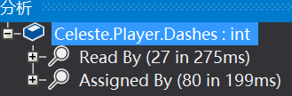
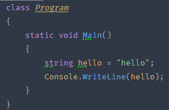
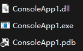
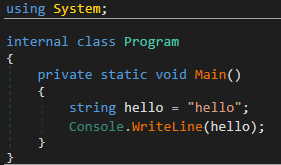
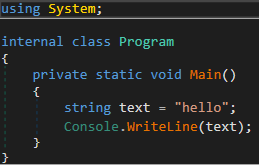
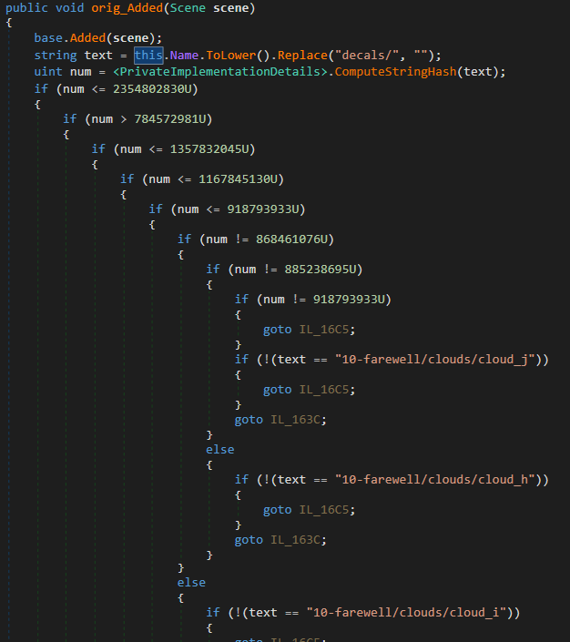
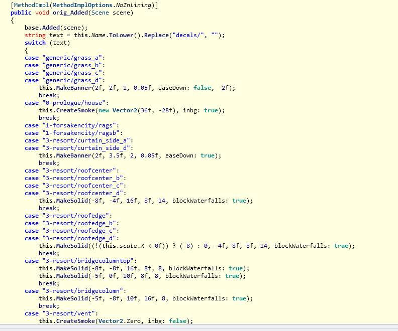

阅读代码
反编译工具
为了进行 Code Mod 的开发, 显然我们需要知道看一眼就能被吓跑的蔚蓝的代码是怎么运行的.
所以这时我们就需要阅读蔚蓝的代码以了解这些东西. 当然, 蔚蓝是个商业游戏, 想指望它开源所有代码是不可能的, 所以我们就必须得借助一些反编译工具.
Warning
不要上传反编译后的代码到任何地方, 这可能会不可避免的造成一些争议.
dnSpy
使用该软件很简单:
- 打开它
- 点击左上角的
文件,打开 - 选择
Celeste.exe(如果你使用 core 版本的 everest, 你需要选择Celeste.dll) - 展开蔚蓝的程序集
- 你现在可以看到蔚蓝都有哪些类了
- 你现在也可以看到蔚蓝都有哪些函数了
现在我们浏览蔚蓝的代码就像你在 IDE 里浏览你的项目一样, 虽然这不是我们的项目. 在浏览过程中, 通常可能你会对着一个字段、一个函数发呆,
大概是因为你根本不知道它是做什么的!
好在 dnSpy 提供了一个很好用的"分析"功能来缓解这个 :

在这里你可以看到哪些字段、哪些函数被谁调用了、被谁引用了、被谁更改了:

ILSpy
使用该软件的方式与 dnSpy 相同:
- 打开它
- 点击左上角的
文件,打开 - 选择
Celeste.exe(如果你使用 core 版本的 everest, 你需要选择Celeste.dll) - 展开蔚蓝的程序集, 浏览类和方法
相应的, ILSpy 也提供了"分析"的功能:

以及对应的分析结果(展开太长了就不展开了):

分析结果说明
因为 ILSpy 并没有实现分析结果的翻译, 这里做下简单的翻译:
Uses直接依赖于Used By被调用于Read By被读取于Assigned By赋值于Expose By暴露于Instantiated By被实例化于Extension Methods拓展方法
反编译代码中的"特殊"语法
一些情况下, 阅读由反编译器生成的代码时可能不是那么顺利, 那么这一节会简单说一些反编译器生成的代码与通常的 C# 代码不一样的地方.
在反编译器中可能会出现这种奇怪的语法:
| Celeste.FinalBoss (即 6a 后半段 Badeline Boss 实体) | |
|---|---|
1 2 3 4 | |
嗯...好的, 首先 orig_ctor 这个名字有点怪但是能接受, 但是接下来的 this..ctor 是什么? 它甚至在 C# 中是个非法语法!
其实这并不罕见, 由于 Everest 对蔚蓝程序的修改并不只是停留在表面, 而更是深入到了 IL 代码层, 这是一种相对底层的代码,
你的 C# 代码最终都会被编译为 IL 然后扔给运行时(CLR-Common Language Runtime)来执行, 同样地, 所有其他的 .NET 系语言比如 VB.NET 和 F# 也都会被编译为 IL.
那么既然这里的 IL 是由 C# 编译而来的, 那么这样的 IL 多多少少会有一种 "C# 味", 反编译器就是靠这种一定的 "C# 味" 来逆推出可能的 C# 源码.
但是既然这里 Everest 直接在 IL 代码层进行了修改, 破坏了这种 "C# 味", 那自然反编译器就会生成奇奇怪怪甚至非法的代码.
那么这里生成的奇怪非法的代码是什么?
.ctor / .cctor
.ctor 是一个特殊的函数名称, 表示该类的构造函数, 比如 Player..ctor(a, b) 即表示调用 Player 类的 .ctor 函数, 虽然你自己是做不到的.
.cctor 也是一个特殊的函数名称, 表示该类的静态构造函数, 比如 Input..cctor() 即表示调用 Input 类的无参静态构造函数.
这一类函数在 IL 层有个标记叫 special name, 当反编译器发现一个方法名为 .ctor 且带有 special name 标记的方法时,
反编译器就会认为它是一个构造函数, 如果反编译器发现这个方法在一个构造函数开头调用了, 那么反编译器就会认为这个构造函数带一个构造函数链,
但是如果它的调用位置在其他位置, 同时又因为 C# 编译器是不可能这么编译的, 那么反编译器就会不知所措, 只能无奈的生成 xxx..ctor() 这种错误的语法.
这也是我们上面看到的 this..ctor 这种语法被生成的原因, 因为这个构造函数调用不在构造函数里出现, 而是在一个正常的 orig_ctor 方法里面!
Info
ctor 这个奇怪的缩写来自单词 constructor, 直译即 构造器.
所以我们通常也会用 .ctor / ctor 来指代构造函数, .cctor / cctor 指代静态构造函数. 此外, Visual Studio 中有个自带的代码片段就是 ctor,
在类中打出 ctor 并双击 Tab 键, vs 就会自动生成该类的构造函数, 这里的 ctor 来源也就在此.
Info
在后面的钩子节我们没有探讨过构造函数如何钩取, 在这里你可能就会明白, 钩取名字为 ctor 的函数就是钩取了构造函数, 静态构造函数同理.
orig_*
还有一些函数以 orig_ 开头, 这其实是 everest 自己"钩取"的函数. 在这里, 比如 Player.Update 方法就被 everest 进行了"钩取",
而钩子函数本体就是 Player.Update, 而对应我们钩子的 orig 委托在就体现为 orig_Update 方法.
| Player.Update (像钩子本体一样!) | |
|---|---|
1 2 3 4 5 6 7 8 9 | |
Info
如果你自行钩取 Player.Update 函数这种已被 everest "钩取" 的函数实际上你钩取的是 everest 的钩子, 这对于 On 钩子可能没有大影响,
但是对于后面我们会说的 IL 钩子有很大影响, 不过这些我们等到后面再说.
反编译代码中的奇怪数字
有时你能在代码中看到各种奇怪的数字
- 例如 320, 180, 这是因为对于 const 常量成员, c# 编译器在编译期就把引用的这些东西直接替换为了数字
- 例如 0.100000024f, 这可能是因为常量计算完后本身就长这样, 也可能单纯是浮点误差之类的
反编译代码中的奇怪命名
num, text, array, flag
当没有特意做过代码混淆的时候, 编译出来然后反编译回去的代码理论上都能被清晰的阅读, 但我们时常在反编译出来的代码中看到类似num, text, array, flag的字样,
这是怎么回事呢, 明明有些变量名是可读的呀, 怎么有的就不可读了, 其实只要你仔细观察就会发现, 可读的基本上都是一些类名, 字段, 属性, 方法等, 而一些局部变量的名字往往不可读,
这是因为这部分的信息存在了.dll同名的.pdb(Program Database File)类型的文件中, 它包含了程序的各种调试数据, 所以只需要把它跟对应.dll放一起就好了(没有就没办法了), 不然反编译器就只能根据这个变量的类型给它一个大众的名字了(比如bool给flag, 字符串给text等)
这里我写了一个简单的c#控制台应用程序

你会发现编译出来的文件有.exe .dll .pdb

如果我直接反编译这个.dll你就会发现代码可读, 几乎跟在自己的ide里没什么两样

而如果把这个.dll拖到桌面再反编译你就会发现代码开始变得奇怪了

反编译代码中的奇怪写法
if if if if if ... 曾经的段子如今让我碰到了
有的时候你会看到类似如下图所示的奇怪代码
WEG表示: 其实本质上它就是一个
switch case, 因为switch case对于大分支实际上会对key做一个哈希, dnspy反编译不太行 用ilspy看

用ilspy打开后就发现确实正常了, ilspy win!(话虽如此, 我觉得dnspy用着还是蛮舒服的)
